BARICENTRO
Mediana: assumindo um triângulo ABC, a mediana é o segmento de reta que segue de um vértice até o ponto médio do lado oposto.
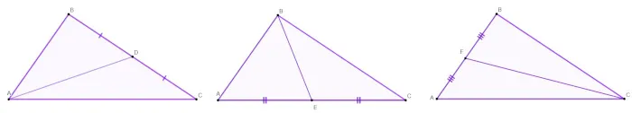Estas medianas se encontram em um mesmo ponto, que é chamado de Baricentro, dado por G.
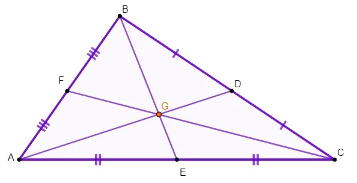Como se calcula o baricentro?
Sabendo que cada vértice possui suas coordenadas, A(xA, yA), B(xB, yB) e C(xC, yC), e seu Baricentro G(xG, yG), basta fazer a média aritmética entre os valores de x para os vértices A, B e C e os valores de y para os mesmos vértices.
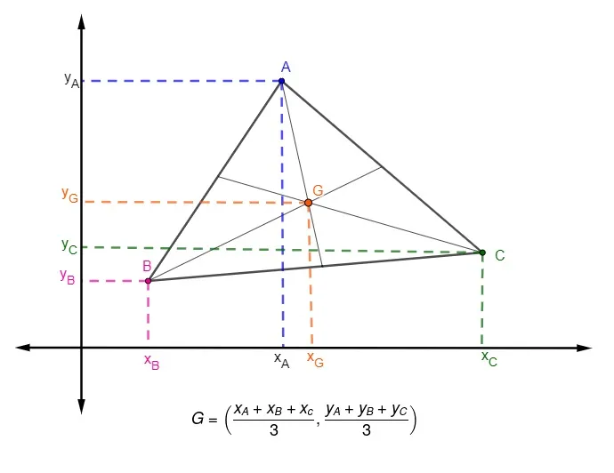Propriedade 1
Dada qualquer uma das medianas do triângulo, o baricentro divide-a em dois novos segmentos cujos comprimentos estão em razão 1 para 2.
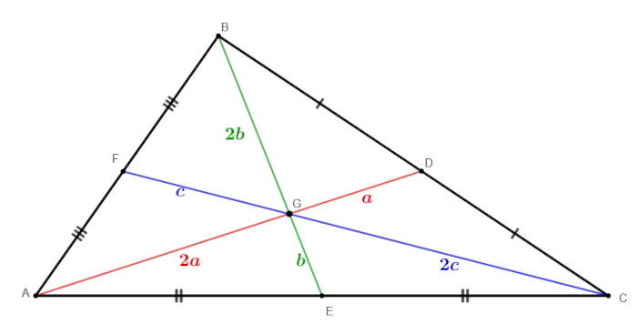Propriedade 2
Em todo triângulo, o baricentro é um ponto interno. Como as medianas são segmentos que ligam de forma interna o vértice ao ponto médio do lado oposto, ou seja, são sempre segmentos internos do triângulo, consequentemente, o baricentro é um ponto interno do triângulo.
INCENTRO
Bissetriz - Reta (semirreta, segmento de reta) que sai do vértice de um ângulo, dividindo este ângulo em dois ângulos iguais. Por exemplo, a bissetriz do ângulo 180° é o segmento que divide este ngulo em dois ângulos iguais a 90º.
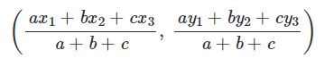 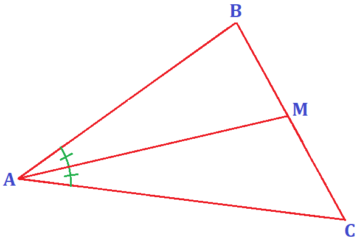Propriedades - Em um triângulo teremos três ângulos internos, em virtude deste apresentar três vértices. Através desses ângulos, partindo do vértice que secciona o ângulo ao meio, podemos traçar uma bissetriz. Ao traçarmos as bissetrizes por meio dos três pontos, elas vão se intersectar em único ponto, sendo este denominado incentro.
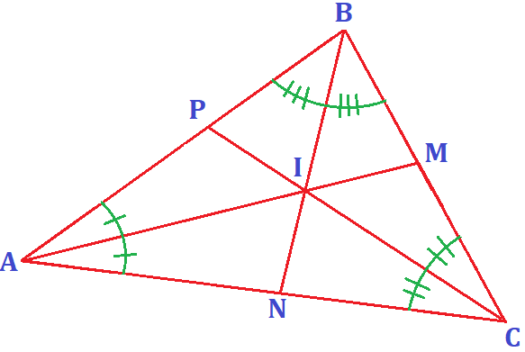Porém, o real motivo em especial para que esse encontro das bissetrizes se chame incentro: este ponto recebe tal denominação porque é o centro da circunferência inscrita no triângulo.
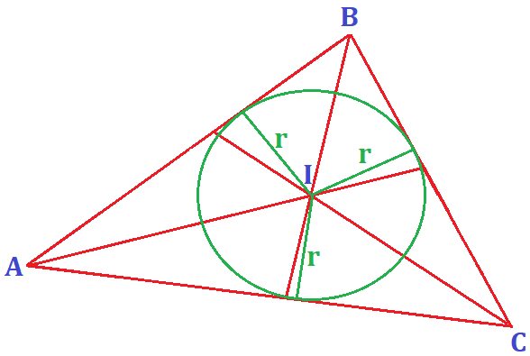Exemplo Prático - A construção da Praça Vilaboim, localizada em São Paulo, é um exemplo da utilização do incentro na construção do seu piso. Por ter um formato triangular, foi preciso fazer um cálculo por meio das bissetrizes que partem dos três pontos da praça.
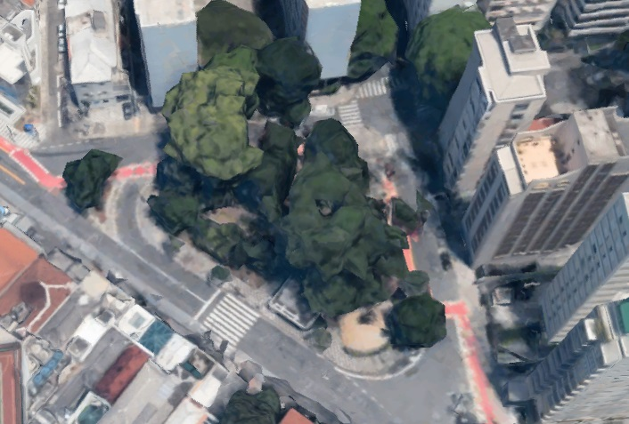CIRCUNCENTRO
Mediatriz - A reta perpendicular que passa no ponto médio em um dos lados desse triângulo.
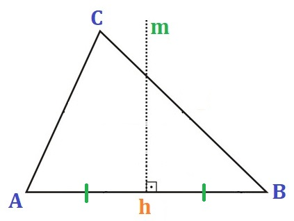Circuncentro - Ponto de encontro/intersecção das três mediatrizes.
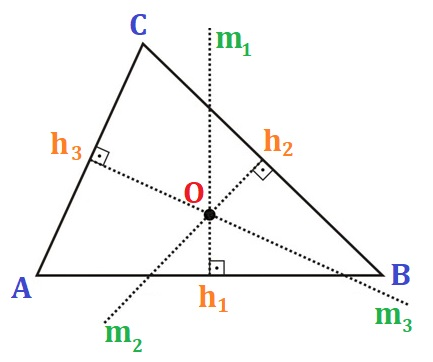Propriedades - A distância do circuncentro a qualquer um dos vértices do triângulo é sempre igual, ou seja, existe uma circunferência circunscrita, cujo centro é o circuncentro do triângulo.
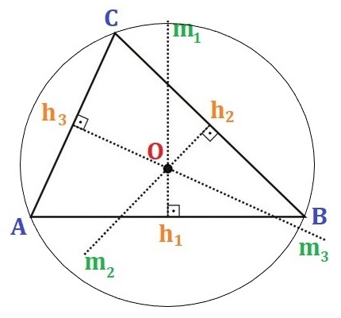Propriedades nos triângulos retângulo, obtusângulo, acutângulo e equilátero - No triângulo retângulo o circuncentro é o ponto médio da hipotenusa, no obtusângulo ele fica exterior ao triângulo e no acutângulo ele fica interior ao triângulo; No triângulo equilátero, o círculo é formado tanto internamente quanto externamente.
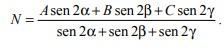Exemplo Prático - Wilker está com um problema em sua comunidade. Uma horta será montada e as três famílias envolvidas no mutirão desejam ficar próximas a ela. Wilker então leva duas sugestões para a reunião da comunidade, a de deixar a horta equidistante às três casas, e a de construí-la em um ponto que minimize a construção dos caminhos que ligarão as casas à horta. Esta última sugestão resulta em uma economia na quantidade de caminho que será aberta, mas causa uma grande diferença entre as distâncias percorridas por cada família, como pode ser visto no esquema abaixo. Figura 2: ponto que minimiza a soma das distâncias. Como dito, essa solução prejudicaria uma das famílias e, segundo João, o estatuto da comunidade não permite isso. Um método para encontrar essa solução, ou seja, para encontrar o ponto que minimiza a soma das distâncias até cada um dos vértices.
ORTOCENTRO
Ortocentro - Ponto de encontro de todas as alturas de um triângulo. Na figura abaixo o ortocentro está sendo representado pela letra O.
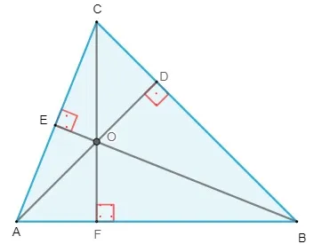Propriedades do ortocentro - Dependendo de qual for o tipo de triângulo (acutângulo, retângulo, obtusângulo), o ortocentro está localizado em um determinado ponto.
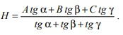Quando o triângulo é acutângulo (todos os ângulos menores que 90°), o ortocentro do triângulo está localizado em seu interior. Na figura abaixo o ortocentro está sendo representado pela letra O.
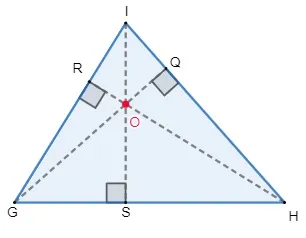Quando o triângulo é retângulo (possui um ângulo igual a 90°), o ortocentro está localizado no vértice oposto à hipotenusa. Na figura abaixo o ortocentro está sendo representado pela letra O.
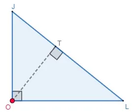Quando o triângulo é obtusângulo (possui um ângulo maior que 90°), o ortocentro está localizado em seu exterior, pois duas de suas alturas estão localizadas em seu exterior e uma em seu interior. Na figura abaixo o ortocentro está sendo representado pela letra O.
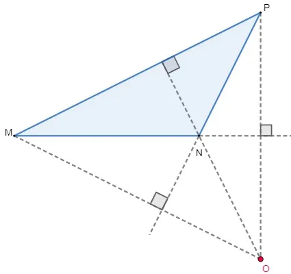CALCULADORA DE TRIANGULOS
Templates
QUESTÕES SOBRE PONTOS NOTÁVEIS DE UM TRIANGULO
01. (Unifcado-RJ) Na figura a seguir, os pontos A, B e C representam as posições de três casas construídas numa área plana de um condomínio. Um posto policial estará localizado num ponto P situado à mesma distância das três casas. Em Geometria, o ponto P é conhecido pelo o nome de:

- A) baricentro.
- B) ortocentro.
- C) circuncentro.
- D) incentro.
- E) ex-incentro.
02. O triângulo possui importantes pontos notáveis, sendo eles o baricentro, incentro, ortocentro e circuncentro. Sobre o baricentro, podemos afirmar que ele é o ponto de encontro das(os):
- A) alturas.
- B) bissetrizes.
- C) mediatrizes.
- D) medianas.
- E) vértices.
03. Durante seus estudos de Geometria, Laís fez o desenho de um triângulo e traçou as suas três medianas. Quando assim o fez, ela percebeu que elas se encontram em um único ponto. Esse ponto é um dos pontos notáveis do triângulo, conhecido como
- A) baricentro.
- B) ortocentro.
- C) circuncentro.
- D) incentro.
04. Sobre o baricentro de um triângulo, podemos afirmar que:
- A) ele é um ponto equidistante aos vértices.
- B) ele é o centro de gravidade de um triângulo.
- C) ele é o ponto de encontro de suas alturas.
- D) ele é o segmento de reta que liga as medianas.
05. O segmento de reta perpendicular traçado de um vértice de um triângulo a um de seus lados é denominado:
- A) alturas.
- B) bissetrizes.
- C) mediatrizes.
- D) medianas.
- E) base.